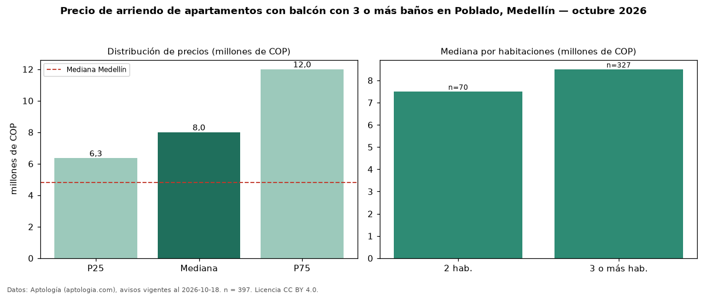

Precio de arriendo de apartamentos con balcón con 3 o más baños en Poblado, Medellín — octubre 2026
Con 397 avisos vigentes, el canon mediano de apartamentos con balcón con 3 o más baños en arriendo en Poblado, Medellín es COP 8,00 millones al mes. Eso es 23 % más que la mediana de los apartamentos con balcón en arriendo de Poblado (COP 6,50 millones, n = 713); este segmento reúne el 56 % de esos avisos. Por metro cuadrado, la mediana es COP 55.160/m² al mes (n = 392), 3 % por debajo de los apartamentos con balcón en arriendo de Poblado (COP 56.624/m²). El área mediana anunciada es 146 m². El segmento con más oferta es el de 3 o más habitaciones (327 avisos, mediana COP 8,50 millones); pasar de 2 habitaciones a 3 o más habitaciones cambia la mediana +13 %. La administración mediana declarada es COP 750.000 al mes (n = 43), aparte del canon. La mitad central de los avisos va de COP 6,35 millones a COP 12 millones (razón 1,9), una dispersión moderada. El estrato más frecuente es 6 (87 % de los avisos con estrato). Datos: Aptología (aptologia.com), CC BY 4.0 — https://www.aptologia.com/arriendo/medellin/poblado. Archivos: PDF, CSV con las cifras y gráfica PNG.

| Avisos únicos | 397 |
|---|---|
| Percentil 25 | COP 6.350.000 |
| Mediana | COP 8.000.000 |
| Percentil 75 | COP 12.000.000 |
| Mediana por m² | COP 55.159 |
Fuente: avisos vigentes de portales inmobiliarios recopilados por Aptología, deduplicados (mínimo 30 avisos únicos por celda). Precios pedidos, no cerrados. Fecha: 2026-10-18.